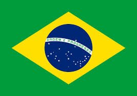
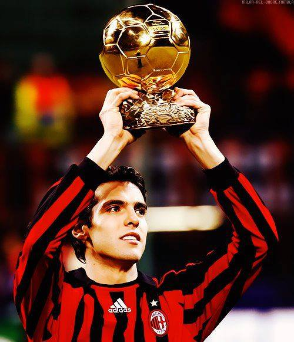

 KAKA - 2007

- Le mythe brésilien en marche
En 2007, après Ronaldo, Ronaldinho et Rivaldo,
Kaka
devient le quatrième Brésilien à remporter le Ballon d'Or France Football
Nationalité : Brésilienne
Né le 22 avril 1982, à Brasilia (Brésil)
Taille : 1,83
Poids : 73 kg
Poste : milieu
Clubs : Sao Paulo (2001-2003), Milan AC (2003-2009), Real Madrid (depuis 2009)
Palmarès : Coupe du monde 2002; Coupe des Confédérations 2005 et 2009; Ligue des champions et Supercoupe d'Europe 2007 ; Coupe du monde des clubs 2007 ; Championnat d'Italie et Supercoupe d'Italie 2004 ; Coupe d'Espagne 2011
Bilan en club : 645 matchs, 204 buts
Bilan en équipe du Brésil: 82 sélections A, 27 buts
Bilan en phase finale de Coupe du monde : 3 participations (2002, 2006, 2010), 10 matches, 1 but
Palmarès Ballon d'Or : vainqueur en 2007
Classement du Ballon d’Or France Football 2007 :
Kaka (Brésil / Milan AC)
Cristiano Ronaldo (Portugal / Manchester United)
Lionel Messi (Argentine / FC Barcelone)
Retour à l'accueil